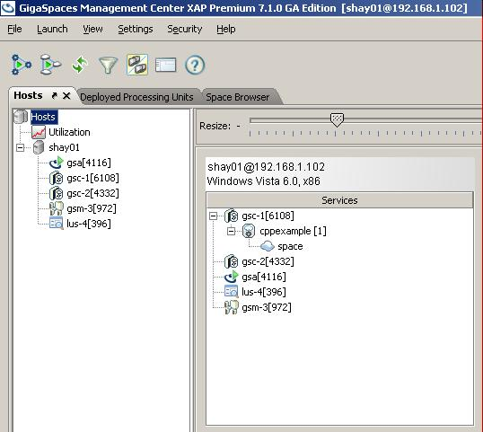
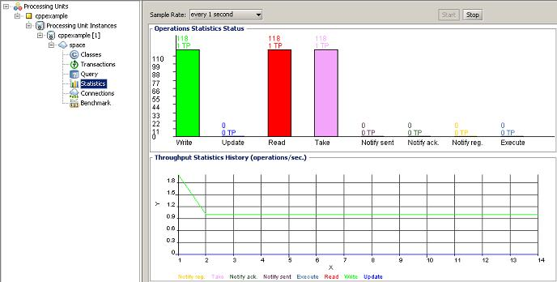
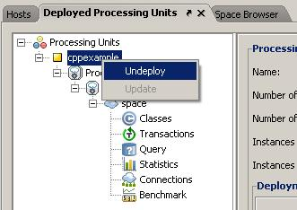
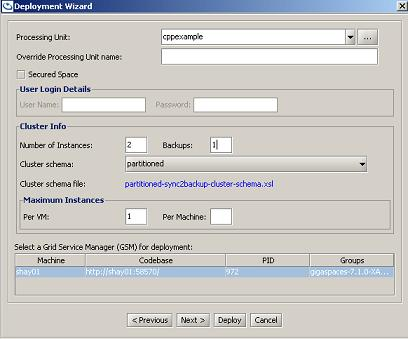
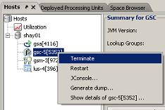
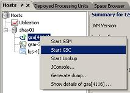

| Summary: Example application that demonstrates the concept of Processing Unit. Error formatting macro: toc: java.lang.NullPointerException |
Overview
The Processing Unit example is located at <GigaSpaces Root>\cpp\examples\CppService and <GigaSpaces Root>\cpp\examples\CppServiceOpenSpaces.
If you use Visual Studio open the solution examples.sln located in <GigaSpaces Root>\cpp\examples. It is recommended to set your solution configuration to Release and do a rebuild that will generate all related files.
C++ Processing Unit Implementation
Implementing CppWorker
To create your own CppWorker you should inherit your class from ICppWorker and implement the following methods:
- run() – the logic that the processing unit should perform.
- destroy() – put your cleaning and thread termination here.
The rest of the interface is for deploying the service and we just need to change the name of the service to our new name.
Click Here to view the example code (the full source code can be found at <GigaSpaces Root>\cpp\examples\CppService\CppService.cpp)
#include <windows.h> #endif class CppService : public ICppWorker { public: CppService(): m_callback(0),m_isRunning(true){} virtual ~CppService() {} virtual const char* className() { return "CppService"; } virtual bool Initialize(IWorkerPeer* Host); virtual CommandObjectPtr run(CommandObjectPtr); virtual bool Destroy(); private: IWorkerPeer* m_callback; bool m_isRunning; }; bool CppService::Initialize(IWorkerPeer* Host) { m_callback = Host; return true; } CommandObjectPtr CppService::run(CommandObjectPtr Object) { genericVector replyParams = Object->getParameters(); SpaceProxyPtr proxy; SpaceFinder finder; std::cout<< "----The C++ service CppService STARTED -----" << std::endl; long long proxyId = any_cast<long long>(replyParams[0]); std::cout<< "----The ID: " << proxyId << std::endl; try { proxy = finder.attach( proxyId, false); std::cout<< "----Find Proxy ------ " << std::endl; } catch(FinderException& ) { std::cout << "Caught FinderException" << std::endl; } catch(XAPException &) { std::cout << "Caught generic XAP Exception" << std::endl; } /************************************************************/ /* */ /* At this point CPP is alive and running and one may */ /* use any of the proxy API in order to interact with */ /* the space and perform calculations or general */ /* business logic. */ /* */ /************************************************************/ try { Message messageTemplate; proxy->snapshot(&messageTemplate); std::cout<< "-- Snapshot Done" << std::endl; while(m_isRunning) { std::cout << "*****Worker Running***** " << std::endl; MessagePtr msg( new Message() ); msg->content = "Hello World"; msg->id = 1; // Fill index std::cout<< "-- Before Write Message Done" << std::endl; proxy->write(msg.get(), NULL_TX, Lease::FOREVER); std::cout<< "-- Write Message Done" << std::endl; MessagePtr result ( proxy->read(&messageTemplate, NULL_TX, 0) ); std::cout<< "-- Read Message Done" << std::endl; proxy->take(&messageTemplate, NULL_TX, 0); std::cout<< "-- Take Message Done" << std::endl; ACE_OS::sleep(1); } } catch(XAPException &e) { e.toLogger(); } genericVector params; CommandObjectPtr ptr( new CommandObject("Results",params)); return ptr; } /****************************************************************/ /* Called upon Destruction of the Space */ /****************************************************************/ bool CppService::Destroy() { m_isRunning = false; std::cout<< "---- Destroy -----" << std::endl; return true; } #if defined(_WIN32) #define EXPORT __declspec(dllexport) #else #define EXPORT #endif extern "C" EXPORT ICppWorker* getWorkerByClass(const char* className) { std::cout<< "---- className: " << className << std::endl; return (0 == strcmp(className, "CppService")) ? new CppService : 0; }
Processing Unit Configuration File
The CPP PU following the standard Processing Unit Configuration.
Click Here to view the CPP PU Configuration File
The Processing Unit configuration file (<GigaSpaces Root>\cpp\examples\CppServiceOpenSpaces\src\META-INF\spring\pu.xml) includes the following:
<?xml version="1.0" encoding="UTF-8"?> <beans xmlns="http://www.springframework.org/schema/beans" xmlns:xsi="http://www.w3.org/2001/XMLSchema-instance" xmlns:os-core="http://www.openspaces.org/schema/core" xsi:schemaLocation="http://www.springframework.org/schema/beans http://www.springframework.org/schema/beans/spring-beans.xsd http://www.openspaces.org/schema/core http://www.openspaces.org/schema/core/openspaces-core.xsd"> <!-- Spring property configurer which allows us to use system properties (such as user.name). --> <bean id="propertiesConfigurer" class="org.springframework.beans.factory.config.PropertyPlaceholderConfigurer"/> <!-- A bean representing a space (an IJSpace implementation). --> <os-core:space id="space" url="/./space" /> <!-- OpenSpaces simplified space API built on top of IJSpace/JavaSpace. --> <os-core:giga-space id="gigaSpace" space="space" /> <!-- The cpp worker example. For creating cpp worker we always use the CXXBean. We define the cpp worker we want to run by setting the workerName property. --> <bean id="cpp" class="com.gigaspaces.javacpp.openspaces.CXXBean"> <property name="gigaSpace" ref="gigaSpace" /> <property name="workerName" value="CppService" /> </bean> </beans>
Building and Running the Example
- To open the example use the example.sln located in <GigaSpaces Root>\cpp\examples.
- Select the Release configuration and rebuild the solution.
- Run:
<GigaSpaces Root>\bin\gs-agent.bat/sh
The build and configuration files are located in <GigaSpaces Root>\cpp\examples\CppServiceOpenSpaces folder.
To deploy the processing unit , move to the above folder and run the following:
build deploy-local-cppexample
The following output will be displayed:
D:\gigaspaces-xap-premium-7.1.0-ga\cpp\examples\CppServiceOpenSpaces>build.bat deploy-local-cppexample
Buildfile: build.xml
build:
dist:
copy-local-cppexample:
[delete] Deleting directory D:\gigaspaces-xap-premium-7.1.0-ga\deploy\cppexample
[mkdir] Created dir: D:\gigaspaces-xap-premium-7.1.0-ga\deploy\cppexample
[copy] Copying 1 file to D:\gigaspaces-xap-premium-7.1.0-ga\deploy\cppexample
deploy-local-cppexample:
[java] Log file: D:\gigaspaces-xap-premium-7.1.0-ga\lib\logs\2010-04-29~18.19-gigaspaces-service-192.168.1.102-3560.log
[java] Apr 29, 2010 6:19:35 PM org.openspaces.pu.container.servicegrid.deploy.Deploy info
[java] INFO: Deploying [cppexample] with name [cppexample] under groups [gigaspaces-7.1.0-XAPPremium-ga] and locators null
[java] Apr 29, 2010 6:19:35 PM org.openspaces.pu.container.servicegrid.deploy.Deploy info
[java] INFO: Searching for GSM in groups [gigaspaces-7.1.0-XAPPremium-ga] and locators [null]
[java] Apr 29, 2010 6:19:41 PM org.springframework.beans.factory.xml.XmlBeanDefinitionReader loadBeanDefinitions
[java] INFO: Loading XML bean definitions from resource loaded from byte array
[java] Apr 29, 2010 6:19:53 PM org.openspaces.pu.container.servicegrid.deploy.Deploy info
[java] INFO: SLA Not Found in PU. Using Default SLA.
[java] Apr 29, 2010 6:19:54 PM org.openspaces.pu.container.servicegrid.deploy.Deploy info
[java] INFO: Waiting for [1] processing unit instances to be deployed...
[java] Apr 29, 2010 6:19:58 PM org.openspaces.pu.container.servicegrid.deploy.Deploy info
[java] INFO: [cppexample] [1] deployed successfully on [192.168.1.102]
[java] Apr 29, 2010 6:19:58 PM org.openspaces.pu.container.servicegrid.deploy.Deploy info
[java] INFO: Finished deploying [1] processing unit instances
BUILD SUCCESSFUL
Total time: 26 seconds
The gs-agnet console will have the following output:
[gsc][5/5352] ----Find Proxy ------ [gsc][5/5352] -- Snapshot Done [gsc][5/5352] *****Worker Running***** [gsc][5/5352] -- Before Write Message Done [gsc][5/5352] -- Write Message Done [gsc][5/5352] -- Read Message Done [gsc][5/5352] -- Take Message Done [gsc][5/5352] *****Worker Running***** [gsc][5/5352] -- Before Write Message Done [gsc][5/5352] -- Write Message Done [gsc][5/5352] -- Read Message Done [gsc][5/5352] -- Take Message Done
To view the deployed CPP PU start the GS-UI:
- Run <GigaSpaces Root>\bin\gs-ui.bat/sh

To view the space deployed as part of the CPP PU move into the Deployed Processing Unit Tab:

To undeploy the CPP PU:

To deploy a clustered CPP PU, Click the Deploy Application button and have the following:

This will deploy the CPP PU with 2 partitions and a backup for each partition.
| After deploying and un-deploying the CPP PU, you will have to terminate the existing GSC and start a new fresh GSC to deploy the CPP PU again.   |